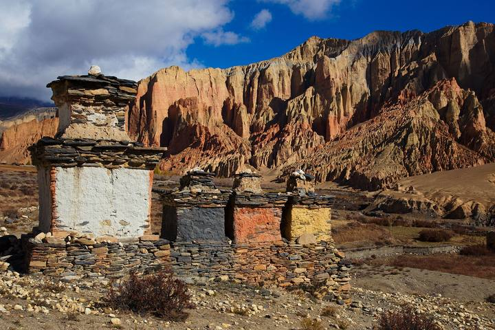

Tsum Valley
An out-and-back trek from the Budhi Gandaki into Tsum, a high valley of monasteries, mani walls and Tibetan-speaking villages, ending at Mu Gompa (3,700 m) near the Tibet border.
- Duration
- 10–16 days
- Distance
- 145 kmapproximate
- Highest point
- 3,700 mMu Gompa · 12,139 ft
- Highest night
- 3,700 mMu Gompa
- Difficulty
- ModerateTeahouse lodges · Homestays
- Best months
- Apr–May, Oct–Nov
Is this trek right for me?
The walking
12 days in all. Most walking days are 5 to 6 hours on foot, and the longest is about 8 hours. Five to seven hour days with real climbs, usually below 4,500 m.
The height
The highest night is at 3,700 m. You will notice the thinner air, but going slowly is usually enough.
Where you sleep
In lodges every night: a simple twin room, a shared bathroom and hot meals in a warm dining room.
The help you need
This is a restricted area. A registered trekking company must arrange your permit, and a licensed guide walks with you.
What it costs
A guided trip with a trekking company usually costs USD 750 to 1,000 a person, going by the prices 5 companies published for 2026.
Overview
Tsum is a side valley of the Budhi Gandaki that runs north-east to the Tibet border between Ganesh Himal and Shringi Himal. It was opened to trekkers only in 2008. The people, the Tsumba, speak a Tibetan dialect, and the upper valley is a flat, farmed plain lined with chortens and long mani walls, with monasteries and nunneries along it. By local custom no animals have been killed here for about a century, a vow the valley has formally renewed in recent years.
The trek shares its first two days with the Manaslu Circuit, then turns off above Philim and climbs through pine forest and a rough gorge to Chumling in lower Tsum. A steep 650 m climb leads into the upper valley at Chhokang Paro, and from there two short days on almost level ground take you past Milarepa's cave and Rachen Gompa to Nile and Mu Gompa. You return the same way.
There is no pass and the highest night is at 3,700 m, so altitude is rarely a serious problem. The effort is in the long, hot days in the lower gorge and the rough trail between Lokpa and Chumling. Lodges and homestays are simple, with plain rooms and a short menu, and the monastery guest rooms at Mu Gompa are more basic still. Tsum is a restricted area, so a guide and an agency-arranged permit are compulsory.
Highlights
- Mu Gompa, the monastery at the head of the valley
- Rachen Gompa nunnery and Milarepa's meditation cave at Piren Phu
- The flat, farmed plain of upper Tsum with its mani walls and chortens
- Views of Ganesh Himal, Shringi Himal and Himalchuli
- A living Tibetan Buddhist culture with a century-old vow against killing animals
Moderate: No pass and a modest high point, but several six to eight hour days on rough gorge trails and very simple lodging.
Altitude profile
Height at the end of each day, with the high points in between. Dots are the places you sleep.
The ascent rate is within the usual guideline of about 500 m of sleeping altitude a day above 3,000 m. People still differ, so watch for symptoms. Open in the acclimatization checker.
Day by day
About 50–60 h of walking in total. Times are for a steady pace with short breaks; add more for photos and tea.
-
Day1
Drive from Kathmandu to Machha Khola
Kathmandu to Arughat to Soti Khola to Machha Khola
Highway as far as the Dhading turn-off, then a slow, rough road through Arughat and Soti Khola and a narrow dirt track above the Budhi Gandaki. Leave Kathmandu by 7 am; if rain has damaged the road you may have to walk the last part.
5 places to stay in Machha Khola, such as Hotel Hilltop, Hotel Chumvally Restaurant and Lodge and Mt. Everest Hotel. See them
Travel day- Sleep at
- 870 m
- Change
- −530 m
- Drive
- 8–10 h
-
Day2
Machha Khola to Jagat
Machha Khola to Khorlabesi to Tatopani to Dobhan to Jagat
The trail stays close to the river all day, climbing over spurs and crossing gravel flats and suspension bridges, with a hot spring at Tatopani. It is hot and humid, so start early. This stretch was badly damaged by the October 2026 flood; expect diversions and rough temporary trail.
8 places to stay in Jagat, such as Rubinala Inn, Mongolian cottage and Jagat Guest House. See them
- Sleep at
- 1,340 m
- Change
- +470 m
- Walking
- 6–7 h
- Distance
- 22 km
-
Day3
Jagat to Lokpa
Pass the checkposts at Jagat and Philim and continue up the gorge to the confluence where the Siyar Khola comes in from the right. Leave the Manaslu trail there and climb steadily through pine and rhododendron forest to the lodges at Lokpa. About 900 m of ascent in all.
- Sleep at
- 2,240 m
- Change
- +900 m
- Walking
- 6–7 h
-
Day4
Lokpa to Chumling
Short on the map and the roughest day of the trek: down through forest to a side stream, up over a spur, then along a narrow path cut into the wall of the Siyar Khola gorge before the last climb to Chumling. The October 2026 flood destroyed a cliff walkway on this stretch; check that the repair is open.
2 places to stay in Chumling, such as Tashi Delek Lobsang Lodge & Restaurant and Chumling Guest House. See them
- Sleep at
- 2,386 m
- Change
- +146 m
- Walking
- 4–5 h
-
Day5
Chumling to Chhokang Paro
Follow the Siyar Khola upstream through small hamlets, passing the turning for Gumba Lungdang at Dumje. Beyond the last hamlets on the valley floor, a steady climb of about two hours brings you out onto the flat upper valley at Chhokang Paro. You sleep almost 650 m higher tonight, so take the climb slowly.
1 place to stay in Chhokang Paro. See them
- Sleep at
- 3,031 m
- Change
- +645 m
- Walking
- 5–6 h
-
Day6
Chhokang Paro to Nile
An easy day up the wide valley floor through Lamagaun, past fields, chortens and long mani walls. A short detour climbs to Piren Phu, the cave where Milarepa is said to have meditated. Continue through Phurbe and Pangdun to Chhule and cross the river to Nile.
2 places to stay in Nile, such as Nile Norling Guest House and Kagni Lodge. See them
- Sleep at
- 3,361 m
- Change
- +330 m
- Walking
- 4–5 h
-
Day7
Nile to Mu Gompa
A short climb on a broad yak trail as the valley narrows and the border ridges close in. Reach Mu Gompa by late morning and visit the prayer hall. In the afternoon, walk up to the old Dhephu Doma nunnery or the hillside above for the view down the whole of Tsum.
1 place to stay in Mu Gompa, such as Mu Gumba. See them
- Sleep at
- 3,700 m
- Change
- +339 m
- Walking
- 2–3 h
-
Day8
Mu Gompa to Chhokang Paro
Mu Gompa to Nile to Rachen Gompa to Chhokang Paro
Back down the valley past Chhule and Phurbe, leaving time for Rachen Gompa, the large walled nunnery on the valley floor. Ask before entering the prayer hall and leave a small donation. From there it is about an hour and a half on level ground to Chhokang Paro.
1 place to stay in Chhokang Paro. See them
- Sleep at
- 3,031 m
- Change
- −669 m
- Walking
- 5–6 h
-
Day9
Chhokang Paro to Lokpa
Chhokang Paro to Chumling to Lokpa
A long day back through lower Tsum: steeply down to the river, along it to Chumling for lunch, then the rough gorge section and the climb through forest to Lokpa. If the group is tired or the trail is wet, stop at Chumling and add a day.
- Sleep at
- 2,240 m
- Change
- −791 m
- Walking
- 7–8 h
-
Day10
Lokpa to Jagat
Drop to the confluence and rejoin the Manaslu trail, which is busier with trekkers and mule trains. Pass Philim and its checkpost and continue down stone steps and across bridges to Jagat. Mostly downhill, and noticeably hotter.
8 places to stay in Jagat, such as Rubinala Inn, Mongolian cottage and Jagat Guest House. See them
- Sleep at
- 1,340 m
- Change
- −900 m
- Walking
- 5–6 h
-
Day11
Jagat to Machha Khola
Jagat to Dobhan to Tatopani to Khorlabesi to Machha Khola
The gorge trail of day 2 in reverse, with the river loud beside you all the way. Start early to be across the open gravel sections before the heat, and soak your feet at Tatopani. Confirm tomorrow's vehicle by phone when you get a signal.
5 places to stay in Machha Khola, such as Hotel Hilltop, Hotel Chumvally Restaurant and Lodge and Mt. Everest Hotel. See them
- Sleep at
- 870 m
- Change
- −470 m
- Walking
- 6–7 h
- Distance
- 22 km
-
Day12
Drive from Machha Khola to Kathmandu
Machha Khola to Soti Khola to Arughat to Kathmandu
The same road out: dirt track to Soti Khola and Arughat, then the slow climb to Dhading Besi and the highway. Expect to reach Kathmandu in the evening, later if rain has cut up the road.
Travel day- Sleep at
- 1,400 m
- Change
- +530 m
- Drive
- 8–10 h
Ways to change it
Gumba Lungdang and Ganesh Himal Base Camp
On the way down, turn off at Dumje and climb about three hours to the nunnery at Gumba Lungdang. A long day walk from there reaches Ganesh Himal Base Camp at around 4,200 m. Adds two to three days.
Combine with the Manaslu Circuit
Instead of walking out, rejoin the main valley at the confluence and continue up to Deng, Sama Gaun and the Larkya La. This needs the Manaslu permit as well and takes about three weeks in all.
Day visit to Mu Gompa
If you prefer a lodge to the monastery guest rooms, leave your bags in Nile, walk up to Mu Gompa and back in four to five hours and sleep a second night in Nile.
Via Ripchet
Between Lokpa and Chumling a higher trail passes through the village of Ripchet on the south side of the valley. It is longer and steeper, with wide views, and is often used on the way down.
Route map
The map loads when you scroll here. It needs a connection the first time; tiles you have viewed stay available offline.
The solid line follows footpaths mapped in OpenStreetMap. It is a guide to where the route goes, not a navigation track: trails are rerouted after landslides, so follow the signs and people on the ground. Marker positions come from OpenStreetMap where we could match a place, and from our own estimates elsewhere.
Download the trail for a map app A GPX file with 129 km of mapped path and every stop. It opens in free apps such as Organic Maps.
When to go
- January: difficult
- February: difficult
- March: good
- April: best time
- May: best time
- June: difficult
- July: difficult
- August: difficult
- September: good
- October: best time
- November: best time
- December: good
Spring and autumn are best. Autumn brings clear skies and the harvest; spring is warmer, with rhododendrons in the lower forest. With no high pass, Tsum stays walkable into December, but the upper valley is very cold and some lodges close from January. The gorge below Chumling is dangerous in the monsoon.
Permits and guide rules
Guide required. Tsum is a restricted area: the permit is issued only through a registered agency and you must walk with a licensed guide. Since 22 March 2026 the Department of Immigration issues it to a single trekker as well, so you no longer need a partner to apply. A guide who knows the valley also opens doors at monasteries and homestays where little English is spoken.
Tsum Valley RAP
Restricted areaTsum Valley restricted area permit · Department of Immigration
| September to November | USD 40 | person for the first 7 days, then USD 7 a day |
| December to August | USD 30 | person for the first 7 days, then USD 7 a day |
Where: Department of Immigration in Kathmandu (the Pokhara immigration office also issues them), through a registered trekking agency only.
Since 22 March 2026 the permit can be issued to a single trekker; before that the minimum was two. You still have to book through a registered agency and walk with a licensed guide, with at most seven trekkers per guide. Covers the Tsum wards of Chumnubri Rural Municipality (3, 6 and 7). If you carry on round the Manaslu circuit you need the Manaslu permit too.
Agency required
MCAP
Conservation areaManaslu Conservation Area Permit · National Trust for Nature Conservation
| Foreign nationals | NPR 3,000 | person, single entry |
| SAARC nationals | NPR 1,000 | person, single entry |
Where: Online at NTNC's e-permit site or at the Tourist Service Centre in Bhrikutimandap, Kathmandu. In practice your agency arranges it with the restricted-area permit.
The fee includes tax and children under 10 do not need a permit. The Manaslu circuit finishes inside the Annapurna Conservation Area, so you need an ACAP as well.
Fees and rules change, sometimes mid-season. Treat these as a planning guide and confirm with the Nepal Tourism Board, the Department of Immigration or a registered agency before you travel. Last reviewed 2026-11. All permits and fees
Getting there
Drive from Kathmandu to Machha Khola in a long day by local bus or private jeep via Dhading Besi and Arughat, and return the same way. After heavy rain the road may be open only as far as Soti Khola or Arughat.
-
Bus: Kathmandu to Machha Khola · 8–10 h
Daily local buses via Arughat and Soti Khola; slow, crowded and rough beyond Arughat.
-
Jeep: Kathmandu to Machha Khola · 7–9 h
A private jeep is the usual choice for groups and can be booked for the return on a fixed day.
- Gateway
- Kathmandu
- Walk starts
- Machha Khola · 870 m
- Walk ends
- Machha Khola · 870 m
Hazards on this route
Flood damage from autumn 2026
The flood of 11 October 2026 is thought to have begun with a landslide dam in lower Tsum. It destroyed a cliff walkway between Lokpa and Chumling and bridges and trail between Machha Khola and Philim, and Tsum was still closed when the main Manaslu route reopened in late October. Repairs are temporary in places. Get a current report from your agency or the Manaslu Conservation Area office before you commit.
Landslides and exposed trail
Between Lokpa and Chumling, and in the Budhi Gandaki gorge below Jagat, the path crosses loose slopes and narrow ledges above the river. Keep moving through slide zones, stand on the uphill side when mules pass and stay off these sections in heavy rain.
Remoteness
There is no road into Tsum, phone signal is patchy and health posts are basic. Helicopter evacuation depends on the weather and on someone reaching a signal. Carry a first-aid kit and check that your insurance covers helicopter rescue.
Altitude
Most people feel fine at these heights, but Chhokang Paro, Nile and Mu Gompa are all above 3,000 m and the climb into the upper valley is abrupt. A mild headache on the first night is common; rest and drink, and go down if symptoms get worse.
Practical tips
- Bring all your cash from Kathmandu; there are no cash machines anywhere on the route.
- Walk to the left of mani walls and chortens, ask before photographing people or prayer halls, and do not ask for meat in upper Tsum.
- Carry a sleeping bag. Lodges lend blankets, but nights at Nile and Mu Gompa fall below freezing in spring and autumn.
- Menus are short above Chumling: dal bhat, noodles, potatoes and tsampa. Bring snacks from Kathmandu, and a filter or tablets for water.
- For Tsum alone the usual permit set is the Tsum restricted-area permit and the Manaslu Conservation Area permit. Some agencies also quote the Manaslu restricted-area permit for the shared trail below Lokpa, so have yours confirm with the Department of Immigration.
- Stage plans and village heights for Tsum differ from one map and agency to the next, and parts of the trail are being rebuilt after the 2026 flood, so treat the times here as estimates.
We know of no cash machines on this route. Carry all the rupees you need from Kathmandu. Work out how much.
Plan this trek
Choose your dates and see the whole trip on one page: where you sleep each night, who can help you, what it may cost and the papers you need. Then ask for a price.
More tools for this trek
Who can help you on this trek
This is a restricted area. A registered trekking company must arrange your permit, and a licensed guide walks with you.
-
A trekking company that arranges everythingUsually USD 750 to 1,000 a person for everything on the trek.
-
A guide, and a porter to carry your bagNot possible here: restricted-area permits are issued only through a registered agency.
-
A guideNot possible here: restricted-area permits are issued only through a registered agency.
-
A porter to carry your bagNot possible here: restricted-area permits are issued only through a registered agency.
-
On your ownNot possible here: restricted-area permits are issued only through a registered agency.
Do you work on the Tsum Valley route as a guide, porter or company? Join TrekkSewa.
Quick answers
How long does the Tsum Valley trek take?
Most people take 10–16 days. The itinerary on this page is 12 days.
How high does the Tsum Valley trek go?
The highest point is Mu Gompa at 3,700 m (12,139 ft). The highest place you sleep is Mu Gompa at 3,700 m.
How difficult is it?
We grade it moderate. No pass and a modest high point, but several six to eight hour days on rough gorge trails and very simple lodging.
Which permits do I need?
Tsum Valley RAP, MCAP. Fees and where to get each one are listed in the permits section above.
Do I need a guide?
Tsum is a restricted area: the permit is issued only through a registered agency and you must walk with a licensed guide. Since 22 March 2026 the Department of Immigration issues it to a single trekker as well, so you no longer need a partner to apply. A guide who knows the valley also opens doors at monasteries and homestays where little English is spoken.
When is the best time to go?
Apr–May, Oct–Nov are best. Spring and autumn are best. Autumn brings clear skies and the harvest; spring is warmer, with rhododendrons in the lower forest. With no high pass, Tsum stays walkable into December, but the upper valley is very cold and some lodges close from January. The gorge below Chumling is dangerous in the monsoon.
Stage plans on this route vary between operators; treat distances and times as approximate. Reviewed 2026-11. Trails, lodges and rules change; confirm locally before you rely on any detail. Report a correction.
Similar treks
More in ManasluManaslu Circuit
Around the world's eighth highest mountain by the 5,106 m Larkya La
 Annapurna
Annapurna
Nar Phu Valley
Two stone villages of Tibetan origin and a 5,320 m pass north of Annapurna

MustangUpper Mustang
Twelve days across the high desert to the walled town of Lo Manthang
 Langtang
Langtang
Langtang Valley
Up a glacial valley to Kyanjin Gompa, a day's drive north of Kathmandu